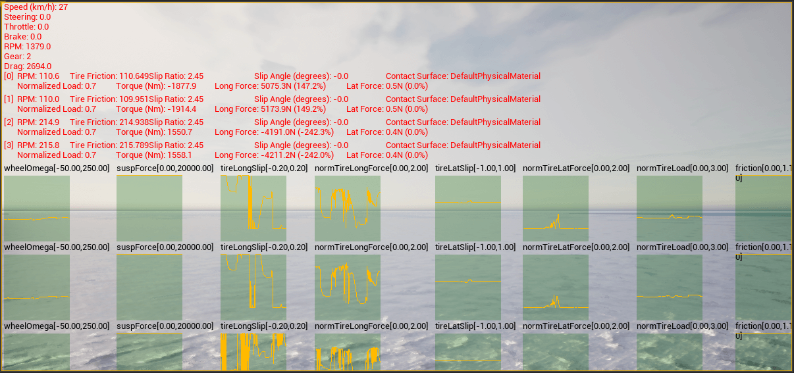

Control and monitor vehicle physics
Physics properties can be tuned for vehicles and their wheels. These changes are applied only on runtime, and values are set back to default when the execution ends.
These properties are controlled through a carla.VehiclePhysicsControl object, which also provides the control of each wheel's physics through a carla.WheelPhysicsControl object.
Vehicle control code example
import carla
import random
def main():
# Connect to client
client = carla.Client('127.0.0.1', 2000)
client.set_timeout(2.0)
# Get World and Actors
world = client.get_world()
actors = world.get_actors()
# Get a random vehicle from world (there should be one at least)
vehicle = random.choice([actor for actor in actors if 'vehicle' in actor.type_id])
# Create Wheels Physics Control
front_left_wheel = carla.WheelPhysicsControl(tire_friction=2.0, damping_rate=1.5, max_steer_angle=70.0, long_stiff_value=1000)
front_right_wheel = carla.WheelPhysicsControl(tire_friction=2.0, damping_rate=1.5, max_steer_angle=70.0, long_stiff_value=1000)
rear_left_wheel = carla.WheelPhysicsControl(tire_friction=3.0, damping_rate=1.5, max_steer_angle=0.0, long_stiff_value=1000)
rear_right_wheel = carla.WheelPhysicsControl(tire_friction=3.0, damping_rate=1.5, max_steer_angle=0.0, long_stiff_value=1000)
wheels = [front_left_wheel, front_right_wheel, rear_left_wheel, rear_right_wheel]
# Change Vehicle Physics Control parameters of the vehicle
physics_control = vehicle.get_physics_control()
physics_control.torque_curve = [carla.Vector2D(x=0, y=400), carla.Vector2D(x=1300, y=600)]
physics_control.max_rpm = 10000
physics_control.moi = 1.0
physics_control.damping_rate_full_throttle = 0.0
physics_control.use_gear_autobox = True
physics_control.gear_switch_time = 0.5
physics_control.clutch_strength = 10
physics_control.mass = 10000
physics_control.drag_coefficient = 0.25
physics_control.steering_curve = [carla.Vector2D(x=0, y=1), carla.Vector2D(x=100, y=1), carla.Vector2D(x=300, y=1)]
physics_control.use_sweep_wheel_collision = True
physics_control.wheels = wheels
# Apply Vehicle Physics Control for the vehicle
vehicle.apply_physics_control(physics_control)
print(physics_control)
if __name__ == '__main__':
main()
Viewing vehicle telemetry
Vehicle telemetry can be visualised by calling the Actor.enable_debug_telemetry method. This will provide graph views of several metrics on the server window as well as vehicle reference points on the simulation window.

You can try the telemetry visualisation tool in the example script manual_control.py located in PythonAPI/examples. Activate the telemetry view by pressing T.